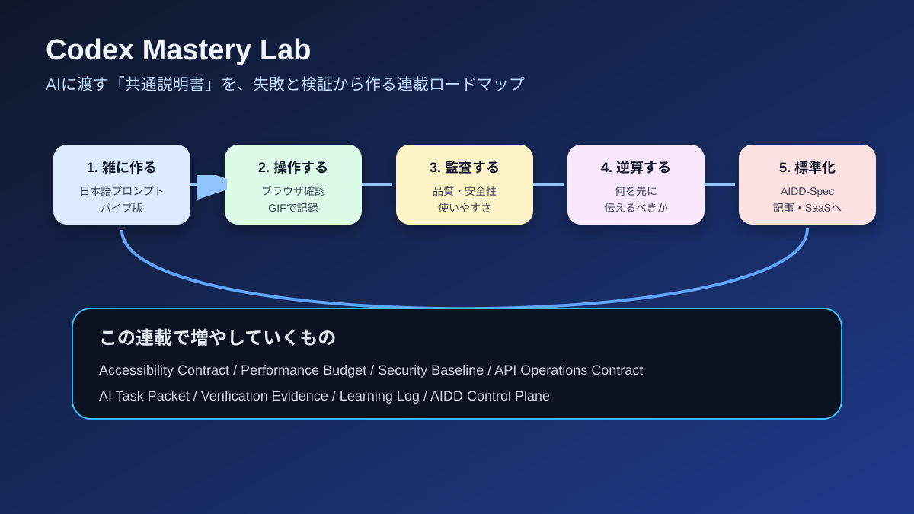

第1回｜AIに「いい感じに作って」と頼む前に必要な共通説明書を作る
2026-06-27 / Codex Mastery Lab 連載リスタート版
想定読了時間: 約10分
種別: Concept / Roadmap / Book

1. この連載でやりたいこと
この連載では、Codexの便利な使い方を紹介するだけでは終わらない。
目的はもっと大きい。
AIにWebアプリやスマホアプリを作らせる時代に、最初に何を伝えれば、あとから困らない成果物が出てくるのかを検証し続ける。
最近のAIコーディングは本当に速い。Codexに「FAQ検索アプリを作って」「問い合わせフォームを作って」と頼むと、数分でそれっぽいものが出てくる。見た目も悪くない。動きもする。はじめて見た人なら「もうこれでいいのでは」と感じるかもしれない。
しかし、実際の開発では「画面が表示された」だけでは終わらない。
- 仕様を満たしているか
- エラー時にどう動くか
- キーボードだけで操作できるか
- スマホで見やすいか
- セキュリティ上危なくないか
- 個人情報をどう扱うか
- パフォーマンスは悪くないか
- 後から直しやすい構成か
- テストや監査の証拠が残っているか
- 運用保守で何を見ればよいか
こうした観点が抜けていると、最初は速くても後で手戻りが増える。
料理で例えるなら、完成写真だけ見て「この料理を再現して」と言われるようなものだ。写真だけでも雰囲気は分かる。でも、材料、分量、火加減、手順、失敗しやすいポイントがなければ、毎回同じ味にはならない。
AI開発でも同じだ。AIに渡すべきなのは、ふわっとした完成イメージだけではない。再現できる説明書が必要になる。
この連載では、その説明書を仮に AIDD-Spec と呼ぶ。
AIDD は AI-Driven Development の略で、AIDD-Spec は「AI駆動開発のための標準仕様」という意味だ。
2. なぜ今これを検証するのか
AIにコードを書かせる記事はすでにたくさんある。
「このプロンプトを使うと爆速」
「AIで1日でSaaSを作った」
「Cursor/Codex/Claude Codeで開発が変わった」
こうした記事は面白いし、実際に役立つものもある。ただし、多くは成功例に寄りがちだ。
一方で、実務で本当に知りたいのは次のようなことだ。
- 雑に頼むと何が抜けるのか
- どの欠陥はあとから直しにくいのか
- AIに最初から何を伝えれば欠陥が減るのか
- テストや監査の証拠をどう残せばよいのか
- 駆け出しエンジニアでもレビューできる形にするには何が必要か
- チームでAI開発を使うなら、どの成果物を標準化すべきか
ここを検証しないままAI開発を進めると、表面上は速いのに、裏側では品質の借金が増える。
たとえば問い合わせフォームをAIに作らせる。見た目はきれい。入力もできる。送信ボタンもある。だが、個人情報を保存してよいのか、ログに出してよいのか、同意チェックが必要なのか、保存期間は何日なのか、誰が見るのか、という情報が抜けている。
この状態で「できました」と言われても、実務では困る。
だからこの連載では、最初からきれいな正解を作らない。まずはあえて雑に作らせる。そこから欠陥を見つける。欠陥を直すための指示を考える。そして、その指示を出すには前段で何を決めておくべきだったのかを逆算する。
3. 検証の基本ループ
この連載の基本ループは次の通り。
1. Codexに日本語の雑なプロンプトで小さなアプリを作らせる
2. できたものをブラウザで操作し、GIFで記録する
3. 仕様・アクセシビリティ・性能・セキュリティなどから監査する
4. 欠陥を記録する
5. 理想状態を定義する
6. 修正プロンプトを作る
7. 指示を見直した版をCodexに作らせる
8. 修正版もブラウザで操作し、GIFで記録する
9. 再監査する
10. 何を最初から伝えるべきだったかを逆算する
11. AIDD-Specに追加する
12. 記事として公開できる形にまとめるポイントは、AIを責めることではない。
Codexがうまく作れなかったなら、それはCodexの限界かもしれない。しかし同時に、こちらが渡した説明が足りなかった可能性もある。
この連載では、AIの失敗を「次に渡す説明書を改善する材料」として扱う。
4. 何を標準化したいのか
AIDD-Specで標準化したいものは、単なるプロンプト集ではない。
プロンプトだけを集めても、状況が変わると使えなくなる。必要なのは、AIに渡す情報の型だ。
現時点では、以下のような成果物を考えている。
| 分類 | 成果物 | 何のためにあるか |
|---|---|---|
| 要件 | AI-Ready Requirement Spec | AIが実装できる粒度まで要件を分解する |
| 画面 | Design Contract | 画面状態、文言、アクセシビリティ、モバイル対応を明確にする |
| API | API Contract | エンドポイント、入力、出力、エラー、認可を明確にする |
| データ | Data Classification | 個人情報や機密情報の扱いを明確にする |
| 非機能 | Performance Budget | 速度、サイズ、Lighthouse目標などを決める |
| セキュリティ | Security Baseline | 最低限守るべき安全基準を決める |
| 実装指示 | AI Task Packet | Codexに1回渡す作業単位を定義する |
| 証拠 | Verification Evidence | 「できた」と言える証拠を残す |
| 学習 | Learning Log | 失敗を次回の指示に反映する |
これらは全部を最初から完璧に作る必要はない。
むしろ、毎回の実験で「この情報がないと困った」と分かったものを少しずつ追加していく。
5. 第2回以降でやること
すでに初期実験として、いくつかの題材を試している。
第2回では、FAQ検索アプリを扱う。雑に作ると見た目は悪くないが、検索欄と結果リストの関係、リスト構造、キーボード操作、アクセシビリティの証拠が抜けた。そこから Accessibility Contract を逆算する。
第3回では、SaaSギャラリー画面を扱う。「プレミアムでビジュアルに」と頼むと、CSSや装飾は増える。そこで Performance Budget と Asset Policy を考える。
第4回では、問い合わせフォームを扱う。個人情報や営業情報を受け取る画面では、見た目だけでなく、同意、保存方針、ログ出力、ブラウザAPIの禁止事項を考える必要がある。
第5回では、問い合わせAPIを扱う。APIが動くだけでは不十分で、CSRF、Origin制限、rate limit、request id、監査ログ、エラー形式、保存期間が必要になる。
その先では、次のようなテーマを扱う予定だ。
- 認証/認可: 管理画面でAIが権限境界をどう間違えるか
- テスト粒度: ユニットテスト、統合テスト、E2Eをどう分けるか
- モバイルUI: タッチ操作、狭い画面、入力しやすさ、通信失敗時の状態
- DB設計: migration、インデックス、削除方針、履歴管理
- 運用保守: ログ、監視、バックアップ、障害時手順
- コスト: 何を測ればコスト悪化を早く見つけられるか
- SaaS化: AIDD-Specを支援するプロダクトに必要な機能
6. 記事の形式
今後の記事では、できるだけ実験過程を隠さない。
毎回、以下を載せる。
- 実際にCodexへ渡した日本語プロンプト
- 実行コマンド
- Codexの出力ログ
- 生成されたファイルやコード
- バイブコーディング版の操作GIF
- 指示を見直した版の操作GIF
- ブラウザコンソールの結果
- 監査スクリプトの出力
- 見つかった欠陥
- 修正プロンプト
- 修正後のdiff
- 再検証結果
- 最初から渡すべきだった情報
- AIDD-Specへの反映
読んでいて少し長く感じるかもしれない。しかし、ここを省略すると「AIで作れました」という軽い記事になってしまう。
この連載で残したいのは、成功体験だけではない。失敗、警告、迷い、修正、再検証まで含めた実験記録だ。
7. この連載の読み方
おすすめは、第1回から順番に読むことだ。
各回は独立して読めるようにするが、後の回ほど前回の学びを前提にする。
たとえば、第2回のAccessibility Contractで「操作できるだけでは足りない」と分かる。第3回のPerformance Budgetで「見た目が良いだけでは足りない」と分かる。第4回のSecurity Baselineで「フォームが動くだけでは足りない」と分かる。
このように、毎回ひとつずつ「AIに最初から渡すべき情報」を増やしていく。
最終的には、AIに渡す共通説明書として、AI Task Packetの形にまとめる。
8. まず覚えておきたいこと
第1回の結論はシンプルだ。
AIに雑に頼むと、かなり良いものが速く出る。だからこそ危ない。
見た目が良いと、人間は安心してしまう。だが、実務で必要なのは見た目だけではない。
AIに頼む前に、少なくとも次を決めておくべきだ。
- 何を満たせば仕様OKか
- どんな状態を表示するか
- どんな情報を扱うか
- どんな操作を許すか
- どのコマンドで検証するか
- どんな証拠を残すか
これが、この連載で作っていくAIDD-Specの出発点である。
9. 次回予告
次回は、FAQ検索アプリを題材にする。
まずCodexに「FAQ検索アプリをいい感じに作って」と頼む。できあがったアプリをブラウザで操作し、GIFで記録する。そのうえで、検索欄、結果リスト、no results表示、キーボード操作、アクセシビリティの関係を監査する。
そして、雑な指示で抜けたものを、指示を見直したAI Task Packetに戻す。
第2回のテーマは、こうだ。
見た目は動いているFAQ検索アプリでも、支援技術やキーボード操作まで考えると何が足りないのか。
ここから、AIDD-Spec最初の具体要素である Accessibility Contract を作っていく。